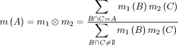
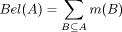
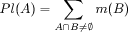

DESCRIPTION
This program combines evidence maps (currently GRASS floating point raster only) using Dempster's
Rule of Combination.
It is part of a general framework for Dempster-Shafer Theory (DST) modelling with GRASS GIS.
Introduction to the DST
(Note: the following is a very brief introduction to DST. Many details have been
left out to keep everything easy to understand. If you want the full mathematical background,
refer to one of the many excellent sources on the internet that can be found by using "Dempster Shafer
Theory" as a search phrase. The original publication is: Shafer, G. (1976). A Mathematical Theory of Evidence.
Princeton University Press, Princeton, New Jersey, USA.)
Consider a standard situation in GIS-based research.
A scientist wants to build a spatial model and check its plausibility. He/she has:
- written down a number of hypotheses. These hypotheses include all possible outcomes of the model,
- created a number of GIS maps that encode variables (evidences) which he/she deems to be of importance for the
model,
-
found a way to quantify the evidence.
For each hypothesis, our scientist would now simply like to combine all supporting evidences and calculate
the total degree of belief he/she can have in that hypothesis. These belief values should then
be written to GIS maps to form a spatial model.
The mathematical framework to achieve this is provided by the Dempster-Shafer Theory of Evidence (DST).
To clarify things, we will need to make some definitions:
- The set of hypotheses H1..n which represent all possible model outcomes is called Frame of Discernment (FOD).
- A GIS map that encodes a variable with relevance to the FOD is a source of evidence.
A map object (e.g. a cell in a raster map) is turned into an evidence through a
Basic Probability Assignment (BPA).
- A BPA is the basic quantification of evidence in the DST.
It consists of a value mn in the range 0 to 1 for each hypothesis in the FOD.
The restriction is that m1..n must sum to 1.
BPAs can be assigned to a singleton hypothesis in H as well as to subsets such
as {H1,H2}.
What this means is that DST has the ability to represent uncertainty as subsets
of H.
E.g. if two hypotheses H1='a' and H2='b' are supplied,
then there will always also exist a set of hypotheses A={H1,H2}
to represent the belief that both could be true ('a OR b').
Evidences from a variety of source can be combined using Dempster's Rule of Combination:

In words: Dempster's Rule computes a measure of agreement between two sources of
evidence for various (sets of) hypotheses
in the FOD (in the formula above: A,B,C). It focuses on the hypotheses which both
sources support. The resulting BPA is calculated
by combining the BPAs of the hypotheses from both sources that yield the hypotheses of the combined
body. The result is also normalised (denominator) to ensure that it is a valid BPA.
From the BPAs, a number of useful DST functions can be calculated. The most important ones
are belief and plausibility.
The belief function Bel(H) computes the total belief in a hypothesis (set) A.
The total belief in A is the BPA mass
of A itself plus the BPA mass attached to all the subsets of (B in the formula
below:

In words: Bel(A) is all the evidence that speaks in favour of A.
DST has a very important characteristic which makes it different from probability theory: if Bel(H)< 1, then
the remaining evidence 1-Bel(H) does not necessarily refute H (in probability theory we would have
H2=1-H1 if the FOD was {H=H1,H2}).
Thus, some of the remaining evidence might plausibly be assigned to (sets of) hypotheses that are subsets
of or include A. This is represented by the plausibility function:

In words: Pl(A) represents the maximum possible belief in A that could
be achieved if there was no uncertainty at all.
Program Functionality
The dst.combine program can be used to combine evidences from different
sources using Dempster's Rule of combination. Currently, all evidences must be
in GRASS 5 floating point raster map format. In order to turn any raster map into
an evidence map, the BPAs have to be calculated. The way to do this is totally
dependent on the model design and it is left up to the user to e.g. create a
custom r.mapcalc script to take care of
BPA calculations (with one exception:
for predictive models, the r.dst.bpa program can be
used).
The model layout, i.e. evidences and associated hypotheses must respect some formal
mathematical restrictions. To take the burden of this from the user, all evidences
and hypotheses are stored in a special XML format element called
DST knowledge base file in the current working location. This file and its
contents can
be managed by using the dst.update command.
From the sources of evidence listed in the DST knowledge base file,
one or more of the following DST functions can
be calculated (for each hypothesis/set of hypotheses in the knowledge base file)
and the result(s) output to a new GRASS raster map
(all values will be in the range 0 to 1):
- Belief
- Bel(A) is the total belief in a hypothesis. This is the most basic DST
function.
- Plausibility
- Pl(A) is the maximum achievable belief given that there is no uncertainty.
- Doubt
- This is simply defined as 1-Pl(A).
- Commonality
- (Definition missing).
- Belief Interval
- Another aspect of representing uncertainty, the belief interval measures
the difference between current belief and maximum achievable belief.
It is defined as Pl(A)-Bel(A). Areas with high values for
the belief interval represent "hot spots" where additional/better
information would improve model results.
- Weight of Conflict
- If the weight of conflict is > 0 it indicates that evidences
from different sources disagree with each other. A high weight of
conflict might indicate a serious flaw in the model design or
disagreement of evidences supplied by different people.
- Maximum BPA
- This gives the maximum belief mass contributed by any of the sources of evidence.
- Minimum BPA
- This gives the minimum belief mass contributed by any of the sources of evidence.
- Maximum BPA source
- This identifies the source of evidence by name, which has contributed the
highest belief mass. It is a useful tool in combination with the
"maximum BPA" measure.
- Minimum BPA source
- This identifies the source of evidence by name, which has contributed the
lowest belief mass. It is a useful tool in combination with the
"minimum BPA" measure.
DST Predictive Modelling
If you have need for a flexible, raster-based spatial predictive modelling framework, DST might be
just the right tool for you.
In fact, this software has been developed with predictive models in mind for which the
DST approach has a number of benefits:
- Simplicity: a DST predictive model can be set up in just a few steps (as outlined below).
- Flexibility: DST has the ability to combine information from different sources, regardless
of distribution parameters.
- Interpretability: the functions calculated are much more meaningful than standard statistical
metrics.
- Efficiency: calculations are faster than statistical algorithms and the memory footprint will
always be very small, regardless of region extent and resolution.
A DST predictive model may be very simple and consist of only two hypotheses for 'site' and 'no site'
(plus the combination of the two to represent uncertainty). It can be built like this:
- Save your known site locations in a GRASS site list and take a random sample using
v.random.sample.
- Convert all sources of evidence (coverage maps, buffer objects, height maps etc.) into evidence
raster maps using r.categorize and
r.dst.bpa (with the random sample).
- Register all evidence maps and hypotheses in a DST knowledge base file using
dst.update (this will automatically create all
additional uncertainty hypotheses sets).
- Associate sources of evidence using dst.source.
- Combine evidence from the sources in the knowledge base using dst.combine.
- Take a look at the output maps and verify results with the full set of known sites
(use v.report for convenience).
NEW as of version 1.5: You can now use dst.predict
to create predictive models with a single, easy-to-use command!
A protocol of a GRASS command line session might look like this:
# A predictive model of lost Maya towns in the jungle.
# (do not take serious ;)
# (point positions of known Maya towns are stored in vector map "locations")
# take a random sample of 50%
v.random.sample input=locations output=sample size=50
# Create a digital elevation raster map from height measurements.
# Turn into an integer map with categories 0-5m, 5-10m, etc.
s.surf.rst input=elevations elev=height
r.categorize input=height output=height_5m mode=width,5
# Import a vector map showing jungle vegetation coverages.
# Interactively label vegetation categories.
v.to.rast in=vegetation output=vegetation
r.support
# Create evidence maps. The idea is that Maya towns are
# found at certain heights and in areas with specific vegetation.
r.dst.bpa raster=height_5m sites=sample output=bpa.height
r.dst.bpa raster=vegetation sites=sample output=bpa.vegetation
# Create new knowledge base file.
dst.create mayatowns
# Register hypotheses in a knowledge base file.
# Attach evidences to hypotheses.
dst.update mayatowns add=SITE
dst.update mayatowns add=NOSITE
dst.update mayatowns rast=bpa.height.SITE hyp=SITE
dst.update mayatowns rast=bpa.height.NOSITE hyp=NOSITE
dst.update mayatowns rast=bpa.height.SITE_NOSITE hyp=SITE,NOSITE
dst.update mayatowns rast=bpa.vegetation.SITE hyp=SITE
dst.update mayatowns rast=bpa.vegetation.NOSITE hyp=NOSITE
dst.update mayatowns rast=bpa.vegetation.SITE_NOSITE hyp=SITE,NOSITE
# Define sources of evidence.
dst.source mayatowns add=height
dst.source mayatowns add=vegetation
dst.source mayatowns source=height rast=bpa.height.SITE hyp=SITE
dst.source mayatowns source=height rast=bpa.height.NOSITE hyp=NOSITE
dst.source mayatowns source=height rast=bpa.height.SITE_NOSITE hyp=SITE,NOSITE
dst.source mayatowns source=vegetation rast=bpa.vegetation.SITE hyp=SITE
dst.source mayatowns source=vegetation rast=bpa.vegetation.NOSITE hyp=NOSITE
dst.source mayatowns source=vegetation rast=bpa.vegetation.SITE_NOSITE hyp=SITE,NOSITE
# Combine sources of evidence and output belief maps
# for all hypotheses.
dst.combine mayatowns sources=height,vegetation output=dst.mayatown
# Compare with the full set of sites to see how well the
# model does (most of the sites should fall into cells
# with high belief values for "SITE").
v.report map=dst.mayatown.SITE.bel sites=locations
Flags
- -a
- Append log output to existing ASCII file.
- -q
- Quiet operation: do not display progress on screen.
- -n
- Turn off normalisation and signal a warning if evidence does not sum to 1. Per default, the
program will normalise evidences to force all evidences to have the same weight and
ensure that the results will be in the range 0 to 1. You can turn this off if you want
to check for potential errors in your own BPA assignments.
Parameters
- file=name
- Name of DST knowledge base file to use. You can get a listing of DST
knowledge base files in your current mapset by invoking
dst.list .
- sources=name,[name,...]
- Specify which sources of evidence in the knowledge base file to combine. The
default is all sources.
- type=name
- Select what type of evidence to combine. This refers to the GIS data format in which
the evidence is stored. Currently only 'rast' is a valid choice and also the default.
- output=name
- Basename of all output maps. This is set to the name of the current location by default
and will be suffixed with [hypothesis].[value] (see below).
- hypotheses=name,[name,...]
- Choose for which hypotheses the DST values (see below) should be calculated. The default
is all (including the NULL hypothesis). NOTE: if you want to specify hypotheses sets, you
must enclose this parameter in double quotes and all set names in "set brackets"! E.g:
hypotheses="a,b,c,{a,c},{a,b,c}". Be sure to use the correct element order when specifying
sets.
- values=name,[name,...]
- Valid choices are: bel,pl,doubt,common,bint,woc. See section on "Program functionality"
for a description. The default is to calculate only belief (bel) values.
- logfile=name
- Specfiy a valid file name if you want a full log of the calculations.
Notes
This program was developed as part of the GRASS 5 DST Predictive Modelling Toolkit.
A big "Thank You!" goes to Gavin Powell, 3d Vision and Geometry, Dept of Computer Science,
Cardiff University, for the DST core routines
used in this program, help and advise and his permission to publish his code as part
of a GPL'd software.
A lot of the information in this document was also taken from the work of Mounia Lalmas
et al. on information retrieval from structured documents using DST.
The term 'knowledge base file' was first used in the manual of the
IDRISI GIS software which also offers some DST functionality.
GIS-based predictive modelling using belief values is also discussed in a paper by
Eric J. Lorup and another one by
Bo Ejstrud.
SEE ALSO
dst.predict
dst.source
dst.update
r.categorize
r.dst.bpa
r.mapcalc
v.random.sample
v.report
AUTHORS
Benjamin Ducke,
University of Bamberg, Germany
Gavin Powell,
3d Vision and Geometry, Dept of Computer Science,
Cardiff University
Last changed: 2005/02/20